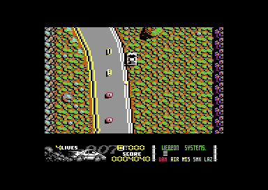
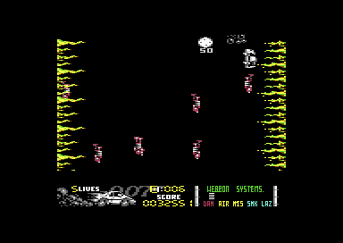
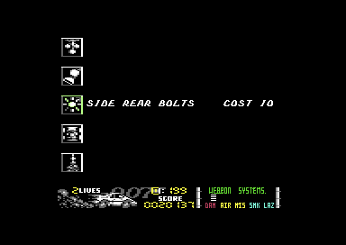

<meta charset="utf-8">
<meta name="viewport" content="width=device-width, initial-scale=1">
<title>The Spy Who Loved Me — gameplay</title>
<link rel="preconnect" href="https://fonts.googleapis.com">
<link rel="stylesheet" href="https://fonts.googleapis.com/css2?family=Lato:wght@400;700;900&family=IBM+Plex+Mono:wght@400;500&display=swap">
<style>
:root{
  --bg:#23262d; --paper:#e9e7e1; --surface:#ffffff; --surface-2:#f1efea; --line:#d5d3cc; --line-soft:#e0ded8;
  --ink:#2f3136; --ink-soft:#55585f; --ink-mute:#80838a;
  --link:#1f5fa8; --link-hover:#154480; --accent:#1f5fa8;
  --amber:#c25a00; --cyan:#1f5fa8; --coral:#d04a3a; --green:#2a8a4a; --violet:#4a5bd6; --hl:#fff0c2;
  --chip:#2f3136; --chip-ink:#ffffff;
  --c64blue:#40318d; --c64grey:#686868;
  --fd:'Lato',system-ui,sans-serif; --fb:'Lato',system-ui,sans-serif; --fm:'IBM Plex Mono',ui-monospace,Menlo,monospace;
  --col:1080px; --gx:68px; --fs:17px; --lh:1.6; --hw:900; --h1:46px; --h2:26px; --sy:48px; --pp:26px; --r:10px;
  --plate-shadow:0 1px 2px rgba(0,0,0,.05),0 4px 14px rgba(0,0,0,.05);
}
*{box-sizing:border-box}
html{background:var(--bg);min-height:100%}
body{background:var(--paper);color:var(--ink);font-family:var(--fb);font-size:var(--fs);line-height:var(--lh);max-width:var(--col);margin:0 auto;min-height:100vh;padding:0 0 4rem}
h1,h2,h3{font-weight:var(--hw);letter-spacing:-.01em;text-wrap:balance;color:var(--ink);margin:0}
.wrap{padding:0 var(--gx)}
.hero{padding:48px var(--gx) 8px;text-align:left}
.eyebrow{font-family:var(--fm);font-size:12px;letter-spacing:.08em;text-transform:uppercase;color:var(--ink-mute);margin:0 0 10px}
.hero h1{font-size:var(--h1);line-height:1.15;letter-spacing:-.02em;margin:0 0 14px}
.hero .sub{margin:0 0 .6em;color:var(--ink-soft)}
section{padding:var(--sy) 0 24px}
section:last-of-type{border-bottom:none}
.fig{font-family:var(--fm);font-size:12px;letter-spacing:.08em;text-transform:uppercase;color:var(--ink-mute);margin:0 0 10px}
h2.t{font-size:var(--h2);margin-bottom:12px}
.lede{color:var(--ink-soft);margin:0 0 30px}
.plate{background:var(--surface);border:1px solid var(--line);border-radius:var(--r);padding:var(--pp);box-shadow:var(--plate-shadow)}
.cap{font-size:14px;color:var(--ink-mute);margin-top:14px;line-height:1.55}
.cap b{color:var(--ink);font-weight:700}
code{font-family:var(--fm);font-size:.82em;background:var(--chip);color:var(--chip-ink);border-radius:4px;padding:2px 6px;overflow-wrap:break-word;-webkit-box-decoration-break:clone;box-decoration-break:clone}

.ft-grid{display:grid;gap:6px}
.ft-grid button{padding:0;position:relative;line-height:0}
.ft-grid canvas{width:100%;image-rendering:pixelated;display:block}
.ft-tag{position:absolute;left:3px;top:3px;font:500 11px/1.3 var(--fm);background:rgba(255,255,255,.88);color:var(--ink);border-radius:3px;padding:1px 4px}
.ft-mark{position:absolute;right:3px;bottom:3px;font:500 10px/1.3 var(--fm);background:var(--chip);color:var(--chip-ink);border-radius:3px;padding:1px 4px}
.ft-big canvas{width:100%;max-width:768px;image-rendering:pixelated;display:block;margin:0 auto}
.ft-table{border-collapse:collapse;font-size:14px;width:100%}
.ft-table td,.ft-table th{border-bottom:1px solid var(--line-soft);padding:5px 8px;text-align:left;vertical-align:top}
.ft-two{display:grid;grid-template-columns:1fr 1fr;gap:16px;align-items:start}
.ft-four{display:grid;grid-template-columns:repeat(3,1fr);gap:12px;margin:0 0 20px}
.ft-four .plate,.ft-two .plate{margin:0;padding:12px}
.ft-shot,.ft-px{width:100%;height:auto;image-rendering:pixelated;display:block}
.ft-wide{max-width:960px;margin:0 auto}
.plate{margin:0 0 22px}
.ft-scroll{overflow-x:auto}
.ft-lab{display:block;font-family:var(--fm);font-size:13px;color:var(--ink-soft);margin:6px 0}
.ft-range{width:100%;max-width:520px;display:block}
.ft-controls{display:grid;grid-template-columns:repeat(3,1fr);gap:14px;margin:12px 0 0}
.ft-read{font-family:var(--fm);font-size:14px;background:var(--surface-2);border-radius:6px;padding:10px 12px;margin:12px 0 0}
.ft-bar-out{height:12px;background:var(--surface-2);border:1px solid var(--line);border-radius:6px;overflow:hidden;margin:10px 0 0;max-width:520px}
.ft-bar-out div{height:100%;background:repeating-linear-gradient(45deg,var(--amber) 0 6px,#e08a3c 6px 12px)}
.ft-meter{position:relative;width:110px;height:18px;background:var(--surface-2);border:1px solid var(--line);border-radius:4px;overflow:hidden}
.ft-meter span{position:absolute;left:0;top:0;bottom:0;background:var(--cyan);opacity:.35}
.ft-meter b{position:relative;font:500 12px/18px var(--fm);padding-left:6px}
.ft-objs{white-space:nowrap}
.ft-obj{display:inline-flex;flex-direction:column;align-items:center;margin:0 3px 0 0;padding:2px;background:#222;border-radius:4px;vertical-align:top}
.ft-obj i{font:500 10px/1.2 var(--fm);color:#fff;font-style:normal}
.ft-swapped{outline:2px dashed var(--amber);outline-offset:-2px}
.ft-swapped i{text-decoration:line-through;text-decoration-color:var(--amber)}
.ft-table canvas{background:#222;border-radius:4px;image-rendering:pixelated}
.ft-dead{display:flex;flex-wrap:wrap;gap:6px;margin:12px 0 0}
.ft-dead button{font-size:12px;padding:4px 8px}
@media (max-width:760px){:root{--gx:16px;--h1:36px;--pp:14px}.ft-two,.ft-four,.ft-controls{grid-template-columns:1fr}}
sup.fn{font-size:.7em;line-height:0}
sup.fn a{text-decoration:none}
sup.fn + sup.fn::before{content:","}
.overview-shot{margin:22px 0}
.overview-shot img{width:100%;max-width:768px;height:auto;aspect-ratio:384/272;image-rendering:pixelated;display:block}
.overview-shot figcaption{font-size:14px;color:var(--ink-mute);margin-top:8px;max-width:768px}
</style>

<!-- tabs -->
<header class="hero">
  <p class="eyebrow">Commodore 64 · 1990 · Domark</p>
  <h1>The Spy Who Loved Me</h1>
  <p class="sub">Five stages of road, water and sea, a truck that sells weapons for tokens, and the rules the code keeps.</p>
</header>
<main class="wrap">
<section id="stages">
  <p class="fig">01 · The stages</p>
  <h2 class="t">From the harbour to the open sea</h2>
  <p class="lede">The game runs through five stages, each scrolling up the screen. The code numbers them 0 to 4 and starts each with <a href="source.html#198A"><code>start_section</code></a>. The <a href="levels.html">Maps</a> tab draws every one of them.</p>
  <div class="ft-two">
    <figure class="overview-shot" style="margin:0"><figcaption>The harbour road.</figcaption></figure>
    <figure class="overview-shot" style="margin:0"><figcaption>The sea bed.</figcaption></figure>
  </div>
  <div class="ft-scroll"><table class="ft-table">
    <thead><tr><th>Stage</th><th>What happens</th></tr></thead>
    <tbody>
      <tr><td>1, the harbour road</td><td>The Lotus drives from the harbour past side roads and bridges, collecting <a href="#tokens">Q tokens</a>. Where the road meets the water the car becomes a speedboat (<a href="source.html#33C5"><code>enter_water</code></a>).</td></tr>
      <tr><td>2, the water</td><td>The speedboat weaves between piers and swimmers to the dock at the end of the map. The boat fires missiles but no gun.</td></tr>
      <tr><td>3, the coast road</td><td>Back in the car, against enemy cars, a helicopter and a boss. The <a href="#shop">Q-truck</a> comes along this road. The road goes round and round until the car takes the ramp into the sea, which it can only do with the sub capability bought from the truck (<a href="source.html#3237"><code>hit_ramp</code></a>).</td></tr>
      <tr><td>4, the sea bed</td><td>The Lotus as a submarine moves freely in every direction (<a href="#steering">steering</a>), against divers that weave on random paths, pairs of larger enemies, and a warship drawn in characters (<a href="graphics.html#ship">the warship</a>). The stage ends a few seconds after the warship is destroyed (<a href="source.html#332D"><code>hit_counted</code></a>).</td></tr>
      <tr><td>5, the open sea</td><td>On the surface against enemies that come in close waves, among them a rider that sways from side to side. The last stop of the map ends the stage with "congratulations", and the game starts again from stage 1 with the score kept (<a href="source.html#26E4"><code>section_end</code></a>).</td></tr>
    </tbody>
  </table></div>
  <p>Zzap!64 described the same run: the Lotus under attack, a speedboat halfway through, the Lotus again with a helicopter and the Q-van, a dive off a pier to the sea bed, and a wet bike against boats at the end.<sup class="fn"><a href="about.html#src-zzap69">4</a></sup> The manual's six scenes include three, aboard the supertanker and inside Atlantis, that were made only for the 16-bit computers.<sup class="fn"><a href="about.html#src-manual">1</a></sup></p>
</section>

<section id="steering">
  <p class="fig">02 · Speed</p>
  <h2 class="t">Where the car sits sets the speed</h2>
  <p>On the roads and the water the scroll speed comes from the car's height on the screen, not from a throttle (<a href="source.html#341F"><code>set_speed</code></a>). Near the top the scenery moves at speed 6; lower down it drops through 5, 4, 3, 2 and 1, and at the very bottom the scenery stops and the car is held there. Pushing up moves the car up the screen and so speeds everything up.</p>
  <p>Every row of scenery that scrolls past adds the speed squared to the score: 36 points a row at top speed, 1 at the slowest (<a href="source.html#0D0D"><code>scroll_step</code></a>, <a href="source.html#8603"><code>speed_score</code></a>). Driving fast scores more than driving carefully. How sharply the car can steer depends on its speed too: a slow car can only drift sideways (<a href="source.html#8621"><code>x_speed_limits</code></a>).</p>
  <p>On the sea bed and the open sea the speed is fixed and the stick moves the car freely (<a href="source.html#346E"><code>fixed_speed</code></a>, <a href="source.html#3840"><code>joystick_free</code></a>).</p>
</section>

<section id="armour">
  <p class="fig">03 · Damage</p>
  <h2 class="t">Armour, and what costs it</h2>
  <p>The car has one store of armour, the DAM bar on the panel, which starts full (<a href="source.html#1ADF"><code>reset_car</code></a>). When the car touches something, the game looks up what to do by the other object's collision kind (<a href="source.html#2A39"><code>collide_player</code></a>):</p>
  <div class="ft-scroll"><table class="ft-table">
    <thead><tr><th>The car meets</th><th>What happens</th></tr></thead>
    <tbody>
      <tr><td>A bump in the road</td><td>The car slows down (<a href="source.html#2EBF"><code>bump_slow</code></a>)</td></tr>
      <tr><td>A slippery patch</td><td>The car spins round, still moving (<a href="source.html#2EFA"><code>bump_spin</code></a>)</td></tr>
      <tr><td>Rubble or wreckage</td><td>5 or 10 off the armour (<a href="source.html#2EE0"><code>bump_damage_5</code></a>, <a href="source.html#2F2C"><code>bump_damage_10</code></a>); when the armour runs out on the road, the car crashes</td></tr>
      <tr><td>Another vehicle</td><td>The two shunt each other sideways and the other loses a hit point (<a href="source.html#30AD"><code>shunt</code></a>)</td></tr>
      <tr><td>A person</td><td>500 points off the score, if the car drives well into them (<a href="source.html#2F85"><code>hit_person</code></a>)</td></tr>
      <tr><td>A ramp</td><td>The car jumps over it, or, at the end of the coast road with the sub capability, dives into the sea (<a href="source.html#3237"><code>hit_ramp</code></a>)</td></tr>
      <tr><td>Rough ground</td><td>A puff of smoke and one off the armour for every pass over it (<a href="source.html#391D"><code>make_smoke</code></a>)</td></tr>
    </tbody>
  </table></div>
  <p>Some scenery kills outright: each character has a kind (<a href="source.html#E872"><code>char_kinds</code></a>), and driving onto a wall or into deep water ends the life at once, however much armour is left.</p>
</section>

<section id="tokens">
  <p class="fig">04 · Q tokens</p>
  <h2 class="t">Q tokens and the Q-truck</h2>
  <p>Q tokens lie on the road and the water. Each one driven over adds one to the count on the panel (<a href="source.html#308C"><code>collect_token</code></a>). They are spent in the Q-truck, which drives along the coast road. Lining the car up behind it and driving into its back takes the car inside (<a href="source.html#310D"><code>q_truck_contact</code></a>, <a href="source.html#1422"><code>h_q_truck</code></a>); hitting it anywhere else is just a shunt.</p>
  <figure class="overview-shot" id="shop"><figcaption>Inside the Q-truck. Up and down slide the column of icons; fire buys the item named beside it.</figcaption></figure>
  <p>The truck sells nine things (<a href="source-overlay.html#4000"><code>shop_items</code></a>, <a href="source-overlay.html#4406"><code>shop_buy</code></a>). Buying one takes its price from the tokens and fills the weapon. Four of them are kept for the sea bed: the lasers, the bolts and the torpedoes are given to the car only when that stage starts (<a href="source.html#1A6A"><code>section_3</code></a>), and the sub capability is what lets the car get there at all.</p>
  <div class="ft-scroll"><table class="ft-table">
    <thead><tr><th>Item</th><th>Q tokens</th><th>What it buys</th></tr></thead>
    <tbody>
      <tr><td>Sub capability</td><td>75</td><td>The dive off the ramp at the end of the coast road</td></tr>
      <tr><td>Miniature lasers</td><td>25</td><td>31 laser shots, on the sea bed</td></tr>
      <tr><td>Pursuit missiles</td><td>10</td><td>31 missiles, fired behind the car</td></tr>
      <tr><td>Smoke refill</td><td>5</td><td>127 puffs of smoke</td></tr>
      <tr><td>Side rear bolts</td><td>10</td><td>Four shots at a time, on the sea bed</td></tr>
      <tr><td>Armour replacement</td><td>1 to 8, or 11 to 18 below half armour</td><td>Full armour (<a href="source-overlay.html#447C"><code>show_item</code></a> works out the price, <a href="discoveries.html#armour-price">how</a>)</td></tr>
      <tr><td>Intercept missiles</td><td>15</td><td>31 missiles that home in on the boss</td></tr>
      <tr><td>Torpedoes</td><td>15</td><td>Eight shots at a time, on the sea bed</td></tr>
      <tr><td>Exit the Q truck</td><td>0</td><td>Back to the road</td></tr>
    </tbody>
  </table></div>
  <p>A token count is kept in two bytes of decimal digits, and the panel shows three of them. <i>Your Commodore</i> warned that a player without 75 tokens when the ramp comes "must continue going round in circles": the coast road's list really does start the road again until the car has dived (<a href="levels.html">Maps</a>).<sup class="fn"><a href="about.html#src-yc">5</a></sup></p>
</section>

<section id="weapons">
  <p class="fig">05 · Weapons</p>
  <h2 class="t">One button, every weapon</h2>
  <p>Fire launches everything the car has, in a fixed order (<a href="source.html#39F2"><code>fire</code></a>): a pursuit missile while there are any, then a laser, then an intercept missile when a boss is on the screen to aim at, then the gun straight ahead, except on the speedboat, which has none (<a href="source.html#33C5"><code>enter_water</code></a>), with one set of extra shots. The extras come from the bought weapons and the pickups: the torpedoes' eight-way burst, or the bolts' four-way, or the two-way, three-way and backward shots that pickups give. Smoke puffs out behind the car while fire is held and the smoke lasts.</p>
  <p>The five bars on the panel show what is left, from the left: DAM the armour, AIR the intercept missiles, MIS the torpedoes, three-way shots and pursuit missiles together, SMK the smoke and LAZ the lasers (<a href="source.html#2981"><code>draw_hud</code></a>). Pickups on the road and the water refill a weapon or the armour (<a href="source.html#32C4"><code>collect_pickup</code></a>).</p>
</section>

<section id="enemies">
  <p class="fig">06 · Enemies</p>
  <h2 class="t">A list for every stage</h2>
  <p>Nothing on the road appears at random. Each stage has a list of three-byte entries: a distance, and which of 32 routines to run when the map reaches it (<a href="source.html#0C17"><code>spawn_from_list</code></a>, <a href="source.html#88A4"><code>spawn_lists</code></a>). The routines make obstacles, people, Q tokens, enemy cars, the Q-truck, the boss, ramps, pickups, divers and the warship, and the last of them, number 31, is not an enemy at all: it is a stage event that sends the map back to an earlier row, changes the map, or stops the scroll (<a href="source.html#25F8"><code>script_event</code></a>).</p>
  <p>Enemies are steered by small handlers: some follow one edge of the road or the other, some keep level with the car and fire, one drops other vehicles in front of it, and the divers of the sea bed weave along one of eight paths picked at random (<a href="source.html#151E"><code>h_shoot_or_turn</code></a>). Shooting one adds its value to the score (<a href="source.html#2C9F"><code>add_score</code></a>), and the signs that float up show a tenth of it (<a href="discoveries.html#signs">the signs</a>).</p>
</section>

<section id="lives">
  <p class="fig">07 · Lives</p>
  <h2 class="t">Five lives, and one more every 100,000</h2>
  <p>The game starts with five lives (<a href="source.html#0A03"><code>game_start</code></a>), and every time the hundred-thousands digit of the score changes it gives one more (<a href="source.html#2981"><code>draw_hud</code></a>). A lost life shows "bad show james" and starts the stage again from its beginning (<a href="source.html#3979"><code>after_death</code></a>). The score, the tokens, the pursuit missiles and the smoke are kept. Everything else goes: every start of a stage clears the intercept missiles, the extra shots, the sea-bed weapons in use, and the sub capability (<a href="source.html#1ADF"><code>reset_car</code></a>), and a death also empties the stores of sea-bed weapons not yet handed over. A car that dies on the coast road after buying the sub capability has to buy it again. The last life shows "game over", and a score good enough goes into the <a href="controls.html#scores">high-score table</a>.</p>
</section>

</main>

<footer style="margin:16px 0 0;padding:22px var(--gx) 0;border-top:1px solid #e0ded8;font-family:'IBM Plex Mono',ui-monospace,Menlo,monospace;font-size:12px;color:#80838a"><a href="https://github.com/gamesexplained/gamesexplained" style="color:#1f5fa8;text-decoration:none">GitHub</a> · <a href="https://discord.gg/3V9GWyRDWV" style="color:#1f5fa8;text-decoration:none">Discord</a><br>© Games Explained contributors. Write-ups, facts and symbol maps are available under <a href="https://creativecommons.org/licenses/by-sa/4.0/" style="color:#1f5fa8;text-decoration:none">CC BY-SA 4.0</a>; code under <a href="https://opensource.org/licenses/MIT" style="color:#1f5fa8;text-decoration:none">MIT</a></footer>
